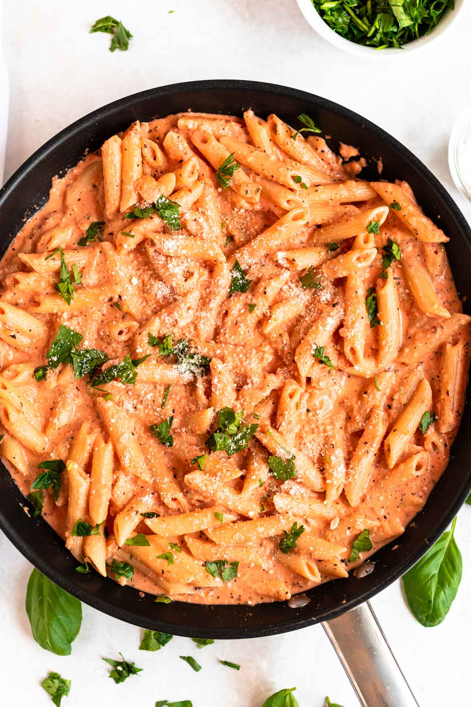

Pasta

Recipe Description
The perfect blend of tomato and cream sauce,
this pastawith pink sauce
is one of our favorite dishes to make and comes togther so quickly!
just a handful of ingredients and a quick cooking time.
Ingredients
- 300 g pasta of choice
- 2 tablespoon butter
- 1 tabllespoon olive oil
- 1 small red onion
- 4 garlic cloves
- 1.5 cups tomato
- 1 teaspoon dried basil
- 1 chicken bouillon cube
Steps
- Cook the pasta according tto package instructions,
then drain, reserving some of the pasta water.
- Heat a large skillet over medium heat and add the butter
and olive oil. once the butter has melted, add the onion
and cook for 4-5 minutes. add the garlic and cook for another minute.
- Add the tomato, dried basil, crumbled chicken bouillon cube, sugar,
red chili flake
and salt and pepper to taste.
simmer for a few minutes, then add the cream, milk and the shredded mozzarella.
- Add the cooked pasta, toss to combine and warm through for a few minutes.
if sauce is too thick, add a splash of water.
Return to Hompage